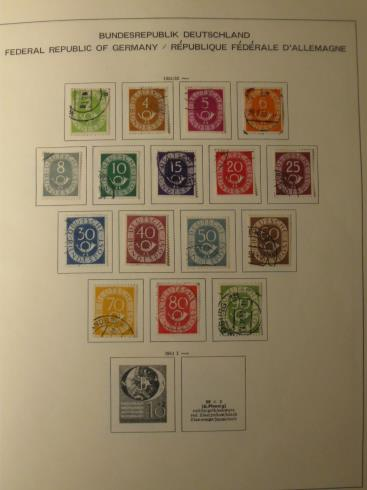
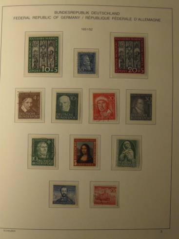
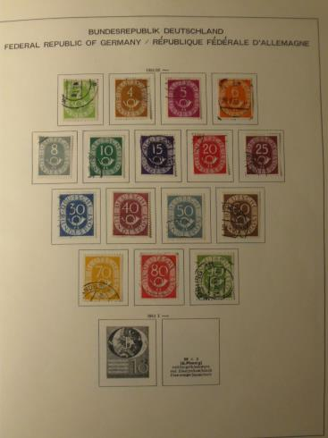
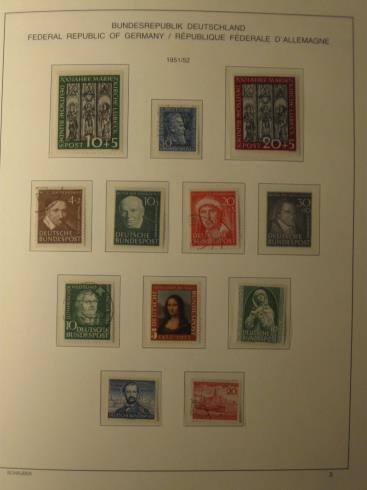

FILATELIAOPPIMATERIAALIA NETISSÄ VUODESTA 1999 LÄHTIENPSYKOLOGIAN PIKALINKIT PSYKAN VIDEOABIKURSSI: PS7 ABI KERTAUSKURSSI (OPS 2016-): PS1 Psyykkinen toiminta ja oppiminen PS2 Kehittyvä ihminen PS3 Tietoa käsittelevä ihminen PS4 Tunteet, psyykkinen hyvinvointi ja mielenterveys PS5 Yksilöllinen ja yhteisöllinen ihminen BRD:n eli Länsi-Saksan ja siitä jatkumona yhteisen Saksan merkkien kerääminen on haastava, mutta monelle keräilijälle intohimoinen tehtävä. Itse aluksi jopa jaoin pois omat Saksan merkkini, mutta sitten innostuinkin saatuani Itä-Saksan (DDR:n) täydelliseksi, keräämään myös BRD:tä. BRD-kokoelmani on viidessä albumissa. Kuvan tummassa albumissa on täydellinen Länsi-Saksan Berliini eli BRD Berliini -kokoelma. Neljässä sinisessä vähintään kaksinkertainen BRD-kokoelma, jossa pyrkimyksenä ollut löytää sekä leimattu että postituore merkki. Suomi-keräilijän opas! Suomi Finland wantlist Mitä mieltä postimerkkiehdotelmista? DDR-kokoelma BRD-kokoelma Aihekeräily - Luther ja uskonpuhdistus Löytölaatikko? Poltetut postimerkit! Linkkejä postimerkkeilyyn |
BRD-KOKOELMA
• KOKO SAKSA on keräilijälle valtaisan haastava, kun siihen lasketaan ns. "wanha saksa", sotien Saksojen alueet ym. ym. Voisi jopa sanoa, että lähes mahdoton kerätä niin joidenkin merkkien harvinaisuuden että erityisesti rahallisen arvon vuoksi. Itse olen tyytynyt tosikeräämiseen vain II maailmansodan jälkeisen Saksan suhteen. Saksa-kokoelmani on neljässä Schaubeckin taskullisessa kansiossa, jossa on käytännössä tuplasivutus - leimatut liimakkeilla ja postituoreet taskutettuina. Lisäksi olen koonnut vielä ylimääräisen leimatun kokoelman erillisiin sivuihin kokoelmani kansioiden loppuun.  





|